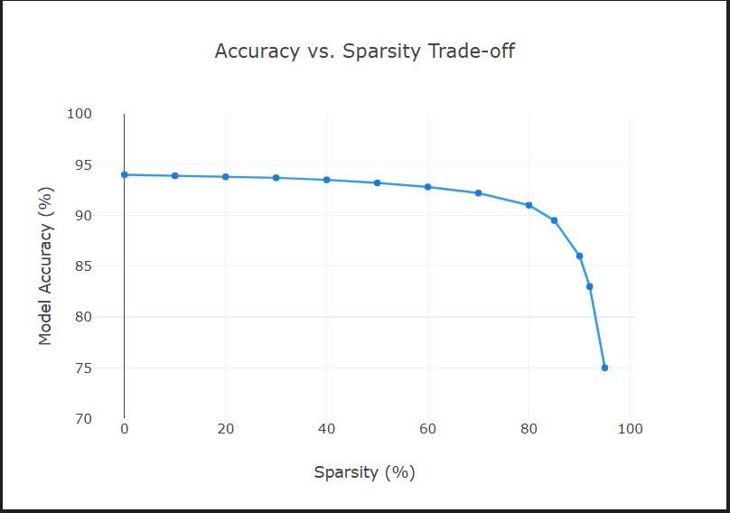

I. Định nghĩa
Cắt tỉa mô hình (Pruning) là kỹ thuật giảm kích thước và độ phức tạp của mạng nơ-ron bằng cách loại bỏ các tham số (trọng số, nơ-ron, kênh, bộ lọc) có đóng góp ít nhất đến hiệu suất. Khác với lượng tử hóa (giảm độ chính xác), cắt tỉa loại bỏ hoàn toàn tham số, tạo ra ma trận thưa (sparse) hoặc mô hình nhỏ gọn hơn về mặt cấu trúc, giúp giảm bộ nhớ, tăng tốc suy luận, và tiết kiệm năng lượng – đặc biệt quan trọng khi triển khai trên thiết bị biên (edge devices) hoặc môi trường tài nguyên hạn chế.
Ý tưởng cốt lõi xuất phát từ quan sát: nhiều mạng nơ-ron lớn bị thừa tham số đáng kể. Chúng chứa các trọng số dư thừa hoặc thậm chí toàn bộ các đơn vị cấu trúc (nơ-ron, kênh) có thể được loại bỏ mà vẫn giữ được độ chính xác, đặc biệt sau giai đoạn tinh chỉnh (fine-tuning). Điều này phù hợp với Giả thuyết Vé số (Lottery Ticket Hypothesis): trong mạng dày đặc tồn tại một mạng con nhỏ hơn có thể đạt hiệu suất tương đương khi được huấn luyện riêng.
II. Chiến lược cắt tỉa
Có hai chiến lược chính: cắt tỉa không cấu trúc và cắt tỉa có cấu trúc. Mỗi loại có ưu nhược điểm riêng và phù hợp với các mục đích triển khai khác nhau.
1. Cắt tỉa không cấu trúc (Unstructured Pruning)
Cắt tỉa không cấu trúc: Phương pháp này bao gồm việc loại bỏ các trọng số riêng lẻ khỏi mạng dựa trên một số tiêu chí nhất định, thường là độ lớn của chúng. Các trọng số có giá trị gần bằng 0 ít ảnh hưởng hơn và được đặt chính xác bằng 0. Điều này tạo ra các ma trận trọng số thưa.
- Ưu điểm: Có thể đạt tỷ lệ thưa thớt rất cao (90-99%) mà tổn thất độ chính xác tối thiểu sau khi tinh chỉnh.
- Nhược điểm: Các ma trận thưa thu được thường không trực tiếp mang lại tốc độ xử lý nhanh hơn trên phần cứng tiêu chuẩn (CPU, GPU) khi sử dụng các thư viện nhân ma trận dày đặc thông thường (như cuBLAS). Để đạt được tốc độ xử lý nhanh hơn đáng kể thường cần đến các bộ tăng tốc phần cứng chuyên dụng hoặc các thư viện phần mềm được tối ưu hóa cho các phép tính ma trận thưa (ví dụ: torch.sparse). Việc giảm kích thước mô hình là đáng kể, điều này có lợi cho băng thông lưu trữ và bộ nhớ.
2. Cắt tỉa có cấu trúc (Structured Pruning)
Thay vì loại bỏ từng trọng số riêng lẻ, phương pháp này loại bỏ toàn bộ các thành phần cấu trúc như bộ lọc hoặc kênh trong các lớp tích chập, hoặc các nơron trong các lớp kết nối đầy đủ.
- Ưu điểm: Tạo ra các mô hình nhỏ gọn hơn . Cấu trúc còn lại đều đặn và có thể được thực thi hiệu quả bằng phần cứng và thư viện tiêu chuẩn, thường dẫn đến tăng tốc độ suy luận trực tiếp và giảm mức sử dụng bộ nhớ mà không cần hỗ trợ chuyên dụng.
- Nhược điểm: Thường đạt được mức độ thưa thớt thấp hơn so với việc cắt tỉa không cấu trúc trước khi độ chính xác bắt đầu giảm đáng kể. Việc xác định cấu trúc nào cần loại bỏ đòi hỏi phải phân tích cẩn thận các mối phụ thuộc (ví dụ: việc loại bỏ một kênh ảnh hưởng đến các lớp tiếp theo sử dụng kênh đó).
III. Quy trình cắt tỉa tổng quát
Quy trình làm việc thông thường gồm các bước lặp hoặc một lần:
- Huấn luyện mô hình gốc: Bắt đầu với mô hình dày đặc, đã hội tụ.
- Chọn chiến lược & tiêu chí: Quyết định unstructured/structured, tiêu chí (độ lớn, gradient, độ nhạy...), và tỷ lệ cắt tỉa mục tiêu.
- Áp dụng cắt tỉa: Tính toán mặt nạ (mask) và đặt các tham số không quan trọng về 0.
- Tinh chỉnh (Fine-tuning): Huấn luyện lại mô hình đã cắt tỉa với tốc độ học nhỏ, để các trọng số còn lại thích nghi bù đắp.
- (Tùy chọn) Lặp lại: Tăng dần tỷ lệ thưa thớt, lặp lại bước 3-4. Cắt tỉa lặp thường cho kết quả tốt hơn cắt một lần.
Mục tiêu là tìm ra sự cân bằng tối ưu giữa độ thưa thớt (hoặc kích thước mô hình) và độ chính xác.
IV. Tiêu chí cắt tỉa
- Cắt tỉa dựa trên độ lớn (Magnitude-based): Phổ biến nhất. Đối với unstructured, cắt các trọng số có giá trị tuyệt đối nhỏ nhất. Với structured, tính chuẩn \(L_p\) (thường \(L_1\) hoặc \(L_2\)) của nhóm tham số (ví dụ: chuẩn \(L_1\) của bộ lọc) và cắt nhóm có chuẩn thấp nhất.
- Cắt tỉa dựa trên gradient: Sử dụng thông tin gradient, có thể kết hợp với độ lớn (ví dụ: tích magnitude * gradient). Phương pháp SynFlow (Tanaka et al.) có thể tìm mạng con quan trọng ngay từ khi khởi tạo.
- Cắt tỉa dựa trên độ nhạy (Sensitivity): Đo lường ảnh hưởng lên hàm mất mát nếu loại bỏ một tham số hoặc cấu trúc. Thường tốn kém vì cần nhiều forward/backward.
Trong thực tế, cắt tỉa theo độ lớn (L1) rất hiệu quả và được triển khai sẵn trong PyTorch.
V. Thực hành cắt tỉa với PyTorch
PyTorch cung cấp module torch.nn.utils.prune hỗ trợ cả unstructured và structured pruning. Dưới đây là ví dụ minh họa:
import torch
import torch.nn as nn
import torch.nn.utils.prune as prune
# Tạo một lớp Conv2d mẫu
layer = nn.Conv2d(in_channels=64, out_channels=128, kernel_size=3)
# --- Cắt tỉa không cấu trúc ---
# Cắt tỉa 30% trọng số có độ lớn L1 nhỏ nhất toàn cục
prune.l1_unstructured(layer, name="weight", amount=0.3)
# Mặt nạ (mask) đã được gắn vào layer
print(hasattr(layer, 'weight_mask')) # True
print(layer.weight_mask) # Tensor 0/1 với khoảng 30% số 0
# --- Cắt tỉa có cấu trúc (ví dụ: cắt kênh đầu ra) ---
structured_layer = nn.Conv2d(in_channels=64, out_channels=128, kernel_size=3)
# Cắt tỉa 25% số kênh đầu ra (dim=0) dựa trên chuẩn L2 của mỗi bộ lọc
prune.ln_structured(structured_layer, name="weight", amount=0.25, n=2, dim=0)
print(hasattr(structured_layer, 'weight_mask')) # True
# Mặt nạ có cấu trúc: toàn bộ các hàng (kênh) bị zeroed
# --- Làm cho việc cắt tỉa trở nên vĩnh viễn (sau khi tinh chỉnh) ---
prune.remove(layer, 'weight')
# Lúc này, layer.weight chứa trực tiếp các giá trị 0 (thay vì mask)
print(torch.sum(layer.weight == 0)) # Đếm số trọng số đã bị cắtTrong vòng lặp huấn luyện, bạn áp dụng cắt tỉa trước khi bắt đầu tinh chỉnh. Các gradient chỉ lan truyền qua các trọng số không bị che (unmasked). Hàm prune.remove sẽ loại bỏ mask và áp dụng vĩnh viễn các số 0, chuẩn bị cho triển khai.
VI. Sự đánh đổi (Trade-off)
Cắt tỉa luôn là bài toán cân bằng giữa độ chính xác và mức độ nén/tốc độ. Các yếu tố ảnh hưởng:

- Tỷ lệ cắt tỉa mục tiêu: Phụ thuộc vào kiến trúc, tập dữ liệu và tác vụ. Cần thử nghiệm để xác định ngưỡng mà độ chính xác bắt đầu giảm mạnh.
- Tinh chỉnh (Fine-tuning): Rất quan trọng để phục hồi độ chính xác. Số epoch và tốc độ học cần được chọn kỹ (thường là tốc độ học nhỏ). Việc tinh chỉnh có thể nhanh hơn do mô hình đã nhỏ, nhưng cần đủ thời gian để hội tụ.
- Hỗ trợ phần cứng: Unstructured pruning chỉ thực sự có lợi khi dùng thư viện/phần cứng hỗ trợ tính toán thưa (sparse). Structured pruning cho tốc độ ngay lập tức trên CPU/GPU thông thường.
- Kết hợp với các kỹ thuật khác: Có thể kết hợp cắt tỉa với lượng tử hóa (quantization) để đạt hiệu quả cao hơn.
Lưu ý thực tế
- Luôn đánh giá mô hình đã cắt tỉa trên tập validation (hoặc test) sau mỗi bước tinh chỉnh.
- Cắt tỉa lặp (iterative pruning) – mỗi lần cắt một lượng nhỏ rồi tinh chỉnh – thường cho kết quả tốt hơn so với cắt một lần với tỷ lệ lớn.
- Với các mô hình lớn (ResNet, BERT), có thể cắt tỉa từ khi mới bắt đầu huấn luyện (pruning at initialization) dựa trên các phương pháp như SynFlow.
VII. Kết luận
Cắt tỉa mô hình là một kỹ thuật mạnh mẽ để giảm kích thước và tăng tốc suy luận của mạng nơ-ron, đặc biệt quan trọng trong bối cảnh triển khai lên thiết bị biên hoặc hệ thống có tài nguyên hạn chế. Bằng cách lựa chọn chiến lược (cấu trúc hay không cấu trúc) và tiêu chí phù hợp, kết hợp với tinh chỉnh và lặp lại, bạn có thể đạt được mô hình nhẹ hơn đáng kể mà vẫn giữ được độ chính xác chấp nhận được. Thư viện PyTorch cung cấp các công cụ linh hoạt để tích hợp cắt tỉa vào quy trình huấn luyện một cách dễ dàng.